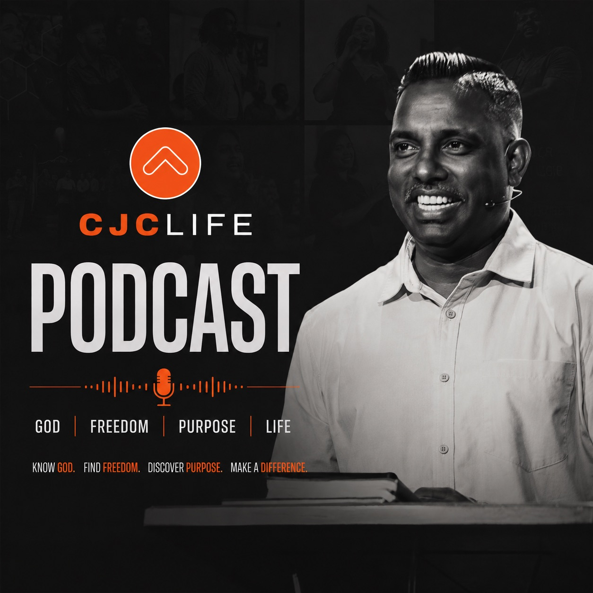

At CJCLife, we're passionate about knowing Jesus, finding freedom, discovering purpose, and living the abundant life found in Christ. Listen to our weekly sermons and live stream recaps.
📍 6401 Bandera Rd, San Antonio TX 78238
Saturday 9 AM — Prayer Service
Sunday 8 AM — Tamil Service
Sunday 10:30 AM — English Service
2nd Sunday 6 PM — Telugu Service
Plan Your Visit →